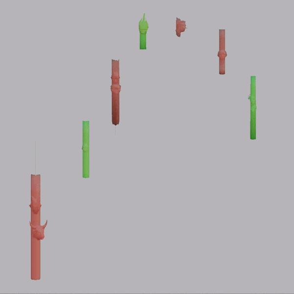
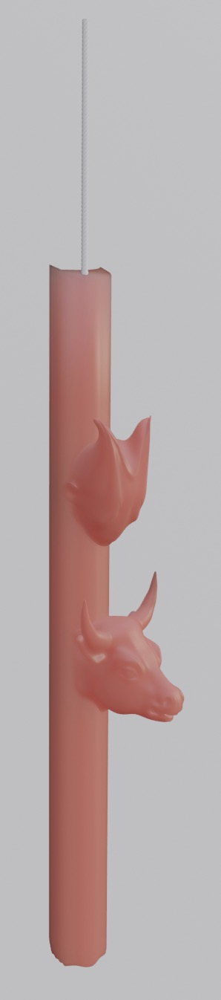
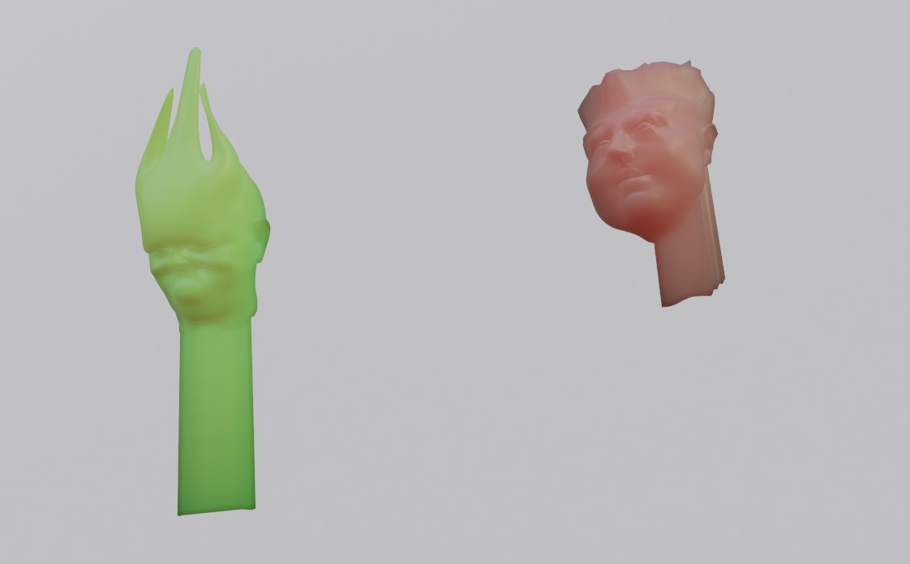

"Work"


three buddies resolution. with Jas Lin and AK Gesh.






The work takes its initial cues from candlestick charts, an 18th ce Japanese market visualization technique originally used to aid in the speculation of rice trading and later for stock market trading. Now used worldwide, it was not introduced to English-speaking traders until the 1990s. Individual candles or combinations of candles can provide insights for humans and AIs into the inner workings of the market and psychology of its participants.
Sampling from an EMT training library of lung sounds, EMF (electromagnetic frequencies) from the starting from a wifi router, and various '80s disco bangers attuned to the conditions of radical uncertainty (“no romance/without finance”, “so many men/so little time/how can I choose?”), in this work, candles dance and spin along in a formation market speculators might call “out of breath.”